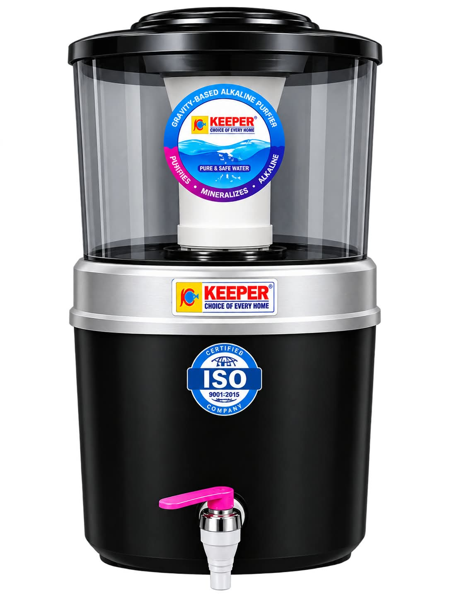

Gravity Water Filters
Natural, Simple & Reliable Water Purification

KEEPER SWATI
Gravity-Based Alkaline Water Purifier for Natural Purification and Mineral Enrichment.
💧 No Electricity Required
💧 Gravity-Based Filtration
🌿 Alkaline Mineral Filtration
♡ Convenient Home Use